<!DOCTYPE html>
<html lang="en">
<head>
  <meta charset="utf-8">
  <meta name="viewport" content="width=device-width, initial-scale=1.0">
  <title>Chapter 2 (Pages 27-46) - Class 9 Basic_science</title>
  <style>

:root {
  --bg-color: #fcfcfd;
  --card-bg: #ffffff;
  --text-color: #1e293b;
  --text-muted: #64748b;
  --primary-color: #0284c7;
  --primary-light: #e0f2fe;
  --border-color: #e2e8f0;
  --radius: 10px;
  --shadow: 0 4px 6px -1px rgb(0 0 0 / 0.05), 0 2px 4px -2px rgb(0 0 0 / 0.05);
}

body {
  font-family: -apple-system, BlinkMacSystemFont, "Segoe UI", Roboto, "Noto Sans Malayalam", "Manjari", "Gayathri", sans-serif;
  background-color: var(--bg-color);
  color: var(--text-color);
  line-height: 1.8;
  font-size: 1.1rem;
  margin: 0;
  padding: 0;
}

.container {
  max-width: 860px;
  margin: 0 auto;
  padding: 2.5rem 1.5rem 5rem 1.5rem;
}

header {
  margin-bottom: 2.5rem;
  padding-bottom: 1.5rem;
  border-bottom: 2px solid var(--border-color);
}

.badge-row {
  display: flex;
  gap: 0.5rem;
  margin-bottom: 0.75rem;
  flex-wrap: wrap;
}

.badge {
  display: inline-block;
  font-size: 0.75rem;
  font-weight: 700;
  text-transform: uppercase;
  letter-spacing: 0.05em;
  padding: 0.25rem 0.65rem;
  border-radius: 9999px;
  background: var(--primary-light);
  color: var(--primary-color);
}

.badge-medium {
  background: #fef3c7;
  color: #b45309;
}

.badge-class {
  background: #dcfce7;
  color: #15803d;
}

h1 {
  font-size: 2.1rem;
  font-weight: 800;
  margin: 0.5rem 0 1rem 0;
  line-height: 1.3;
  color: #0f172a;
}

.nav-bar {
  display: flex;
  justify-content: space-between;
  margin: 1.5rem 0;
  font-size: 0.95rem;
  flex-wrap: wrap;
  gap: 0.5rem;
}

.nav-bar a {
  color: var(--primary-color);
  text-decoration: none;
  font-weight: 600;
  padding: 0.5rem 1rem;
  border-radius: var(--radius);
  background: var(--card-bg);
  border: 1px solid var(--border-color);
  transition: all 0.2s ease;
}

.nav-bar a:hover {
  background: var(--primary-light);
  border-color: var(--primary-color);
}

.nav-bar .disabled {
  color: var(--text-muted);
  pointer-events: none;
  border-color: transparent;
  background: transparent;
}

.page-section {
  background: var(--card-bg);
  border: 1px solid var(--border-color);
  border-radius: var(--radius);
  box-shadow: var(--shadow);
  padding: 2rem;
  margin-bottom: 2.5rem;
}

.page-header {
  display: flex;
  align-items: center;
  justify-content: space-between;
  margin-bottom: 1.25rem;
  padding-bottom: 0.5rem;
  border-bottom: 1px dashed var(--border-color);
}

.page-number {
  font-size: 0.8rem;
  font-weight: 700;
  text-transform: uppercase;
  color: var(--text-muted);
  letter-spacing: 0.05em;
}

.page-content p {
  margin: 0 0 1.25rem 0;
  white-space: pre-wrap;
  word-break: break-word;
}

.page-content p:last-child {
  margin-bottom: 0;
}

.diagram-card {
  margin: 2rem 0;
  text-align: center;
  background: #f8fafc;
  border: 1px solid var(--border-color);
  border-radius: var(--radius);
  padding: 1rem;
  overflow: hidden;
}

.diagram-card img {
  max-width: 100%;
  height: auto;
  border-radius: calc(var(--radius) - 4px);
  display: inline-block;
  box-shadow: 0 2px 4px rgba(0,0,0,0.04);
}

.diagram-card figcaption {
  font-size: 0.85rem;
  color: var(--text-muted);
  margin-top: 0.75rem;
  font-weight: 500;
}

footer {
  margin-top: 3rem;
  padding-top: 2rem;
  border-top: 2px solid var(--border-color);
}

  </style>
</head>
<body>
  <div class="container">
    <header>
      <div class="badge-row">
        <span class="badge badge-class">Class 9</span>
        <span class="badge badge-medium">English Medium</span>
        <span class="badge">Basic science</span>
        <span class="badge">Part 1</span>
      </div>
      <h1>Chapter 2 (Pages 27-46)</h1>
      <div class="nav-bar"><a href="part_1_chapter_01.html">← Chapter 1 (Pages 7-26)</a><a href="index.html">☰ Index</a><a href="part_1_chapter_03.html">Chapter 3 (Pages 47-66) →</a></div>
    </header>
    <main>
      <section class="page-section" id="page-27">
  <div class="page-header"><span class="page-number">Page 27</span></div>
  <figure class="diagram-card" id="fig_ch02_p027_01"><figcaption>Figure fig_ch02_p027_01 (Page 27)</figcaption></figure>
  <figure class="diagram-card" id="fig_ch02_p027_02"><figcaption>Figure fig_ch02_p027_02 (Page 27)</figcaption></figure>
  <figure class="diagram-card" id="fig_ch02_p027_03"><figcaption>Figure fig_ch02_p027_03 (Page 27)</figcaption></figure>
  <figure class="diagram-card" id="fig_ch02_p027_04"><figcaption>Figure fig_ch02_p027_04 (Page 27)</figcaption></figure>
  <figure class="diagram-card" id="fig_ch02_p027_05"><figcaption>Figure fig_ch02_p027_05 (Page 27)</figcaption></figure>
  <figure class="diagram-card" id="fig_ch02_p027_06">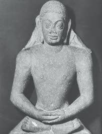<figcaption>Figure fig_ch02_p027_06 (Page 27)</figcaption></figure>
  <figure class="diagram-card" id="fig_ch02_p027_07"><figcaption>Figure fig_ch02_p027_07 (Page 27)</figcaption></figure>
  <figure class="diagram-card" id="fig_ch02_p027_08"><figcaption>Figure fig_ch02_p027_08 (Page 27)</figcaption></figure>
  <figure class="diagram-card" id="fig_ch02_p027_09"><figcaption>Figure fig_ch02_p027_09 (Page 27)</figcaption></figure>
  <figure class="diagram-card" id="fig_ch02_p027_10"><figcaption>Figure fig_ch02_p027_10 (Page 27)</figcaption></figure>
  <figure class="diagram-card" id="fig_ch02_p027_11"><figcaption>Figure fig_ch02_p027_11 (Page 27)</figcaption></figure>
  <figure class="diagram-card" id="fig_ch02_p027_12"><figcaption>Figure fig_ch02_p027_12 (Page 27)</figcaption></figure>
  <div class="page-content">
    <p>Ideas and Early States</p>
    <p>important ones. These new ideas got the support of Vaishyas and
Gahapathis.</p>
    <p>How did the development of an agricultural economy set the
stage for the rise of new ideas in the 6th century BCE? Discuss.</p>
    <p>Jainism
Vardhamana Mahavira was born in Kundagrama near Vaishali
in Bihar. According to Jainism, Vardhamana Mahavira is the 24th
Tirthankara.</p>
    <p>The Tirthankaras
‘Tirthankara’ means ‘one who attained wisdom
through asceticism’. There are 24 Tirthankaras in
-DLQLVP 5LVKDEKDGHYD ZDV WKH ÀUVW 7LUWKDQNDUD
The 23rd Tirthankara was Parswanatha. Vardhamana
Mahavira was the 24th (and the last) Tirthankara.
Mahavira propagated the ideas of Jainism by adding
his principles to those of Parswanatha.</p>
    <p>Statue of Tirthankara
from Mathura</p>
    <p>Born in Vaishali</p>
    <p>Vardhamana
Mahavira</p>
    <p>He came to be known
as Mahavira and Jina
Attained Nirvana at
Pava (near Patna)</p>
    <p>Standard IX</p>
    <p>27</p>
  </div>
</section><section class="page-section" id="page-28">
  <div class="page-header"><span class="page-number">Page 28</span></div>
  <figure class="diagram-card" id="fig_ch02_p028_01"><figcaption>Figure fig_ch02_p028_01 (Page 28)</figcaption></figure>
  <figure class="diagram-card" id="fig_ch02_p028_02"><figcaption>Figure fig_ch02_p028_02 (Page 28)</figcaption></figure>
  <figure class="diagram-card" id="fig_ch02_p028_03"><figcaption>Figure fig_ch02_p028_03 (Page 28)</figcaption></figure>
  <figure class="diagram-card" id="fig_ch02_p028_04"><figcaption>Figure fig_ch02_p028_04 (Page 28)</figcaption></figure>
  <figure class="diagram-card" id="fig_ch02_p028_05"><figcaption>Figure fig_ch02_p028_05 (Page 28)</figcaption></figure>
  <figure class="diagram-card" id="fig_ch02_p028_06"><figcaption>Figure fig_ch02_p028_06 (Page 28)</figcaption></figure>
  <figure class="diagram-card" id="fig_ch02_p028_07"><figcaption>Figure fig_ch02_p028_07 (Page 28)</figcaption></figure>
  <figure class="diagram-card" id="fig_ch02_p028_08"><figcaption>Figure fig_ch02_p028_08 (Page 28)</figcaption></figure>
  <figure class="diagram-card" id="fig_ch02_p028_09"><figcaption>Figure fig_ch02_p028_09 (Page 28)</figcaption></figure>
  <figure class="diagram-card" id="fig_ch02_p028_10"><figcaption>Figure fig_ch02_p028_10 (Page 28)</figcaption></figure>
  <figure class="diagram-card" id="fig_ch02_p028_11"><figcaption>Figure fig_ch02_p028_11 (Page 28)</figcaption></figure>
  <figure class="diagram-card" id="fig_ch02_p028_12"><figcaption>Figure fig_ch02_p028_12 (Page 28)</figcaption></figure>
  <figure class="diagram-card" id="fig_ch02_p028_13"><figcaption>Figure fig_ch02_p028_13 (Page 28)</figcaption></figure>
  <figure class="diagram-card" id="fig_ch02_p028_14">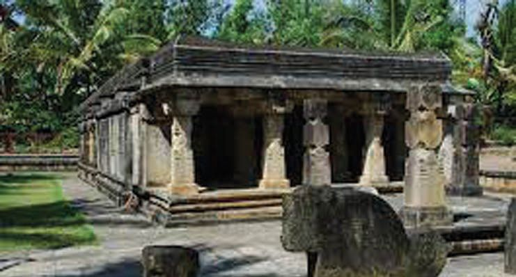<figcaption>Figure fig_ch02_p028_14 (Page 28)</figcaption></figure>
  <figure class="diagram-card" id="fig_ch02_p028_15"><figcaption>Figure fig_ch02_p028_15 (Page 28)</figcaption></figure>
  <figure class="diagram-card" id="fig_ch02_p028_16"><figcaption>Figure fig_ch02_p028_16 (Page 28)</figcaption></figure>
  <figure class="diagram-card" id="fig_ch02_p028_17"><figcaption>Figure fig_ch02_p028_17 (Page 28)</figcaption></figure>
  <figure class="diagram-card" id="fig_ch02_p028_18"><figcaption>Figure fig_ch02_p028_18 (Page 28)</figcaption></figure>
  <div class="page-content">
    <p>Chapter 2</p>
    <p>In this world, everything has life</p>
    <p>Doctrines of
Jainism</p>
    <p>Do not harm any living being
Birth and rebirth are determined on the
basis of Karma</p>
    <p>Denying the authenticity of the Vedas, Mahavira proposed three
principles for attaining &#x27;Moksha&#x27; (salvation). They were &#x27;Right
Belief&#x27;, &#x27;Right Knowledge&#x27; and &#x27;Right Action&#x27;. They are known
as the ‘Triratnas’. Mahavira shared his ideas with the people in
Prakrit languages. According to Jainism, monks and nuns were
VXSSRVHGWRREVHUYHÀYHYRZVGRQ·WNLOODQ\WKLQJGRQ·WVWHDO
don’t lie, don’t own property and practise celibacy. Later, two
sects were formed in Jainism _ &#x27;Swetambaras&#x27; and &#x27;Digambaras&#x27;.
The principle of non-violence emphasised by Jainism has
LQÁXHQFHG,QGLDQSKLORVRSK\</p>
    <p>Kerala and Jainism
Jainism which spread to different parts of India came to Kerala also. Wayanad
was an important Jain centre in Kerala. The remains of Jain temples are still
seen here.</p>
    <p>A Jain temple in Wayanad</p>
    <p>28</p>
    <p>Social Science I</p>
  </div>
</section><section class="page-section" id="page-29">
  <div class="page-header"><span class="page-number">Page 29</span></div>
  <figure class="diagram-card" id="fig_ch02_p029_01"><figcaption>Figure fig_ch02_p029_01 (Page 29)</figcaption></figure>
  <figure class="diagram-card" id="fig_ch02_p029_02"><figcaption>Figure fig_ch02_p029_02 (Page 29)</figcaption></figure>
  <figure class="diagram-card" id="fig_ch02_p029_03"><figcaption>Figure fig_ch02_p029_03 (Page 29)</figcaption></figure>
  <figure class="diagram-card" id="fig_ch02_p029_04"><figcaption>Figure fig_ch02_p029_04 (Page 29)</figcaption></figure>
  <figure class="diagram-card" id="fig_ch02_p029_05">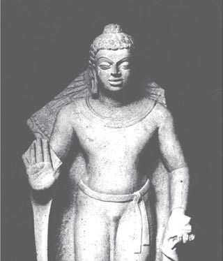<figcaption>Figure fig_ch02_p029_05 (Page 29)</figcaption></figure>
  <figure class="diagram-card" id="fig_ch02_p029_06">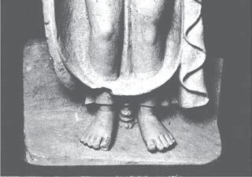<figcaption>Figure fig_ch02_p029_06 (Page 29)</figcaption></figure>
  <figure class="diagram-card" id="fig_ch02_p029_07"><figcaption>Figure fig_ch02_p029_07 (Page 29)</figcaption></figure>
  <figure class="diagram-card" id="fig_ch02_p029_08"><figcaption>Figure fig_ch02_p029_08 (Page 29)</figcaption></figure>
  <figure class="diagram-card" id="fig_ch02_p029_09"><figcaption>Figure fig_ch02_p029_09 (Page 29)</figcaption></figure>
  <div class="page-content">
    <p>Ideas and Early States</p>
    <p>Gautama Buddha who Sought the Cause of Sorrows
,QWKHWKLUW\ÀUVWVXNWDRQHRIWKHORQJHVWGLVFRXUVHVRIWKH%XGGKDLQWKH
Digha Nikaya, Buddha tells a young man, who has just joined Buddhism, as
IROORZV
In family life, man and woman should live with mutual respect and
both should perform their respective duties properly. In addition to this,
employers should treat their servants and workers with courtesy. They
should not be given tasks beyond their strength. They should be given
adequate food and fair wages. They should be cared for in times of sickness
DQGLQÀUPLW\7KHZRUNHUVRQWKHLUSDUWVKRXOGEHVDWLVÀHGZLWKWKHLUIDLU
wages and work well and maintain the dignity of their employer.</p>
    <p>The Buddha’s teachings and principles were simple
DQGSUDFWLFDO+HUHMHFWHGWKH9HGDVVDFULÀFHV &lt;DJDV 
and the caste system. His concept of ‘Ahimsa’ was
suitable to the new conditions in the Ganga basin.
Cattle were needed in agriculture to prepare land for
cultivation and to carry goods. But cattle were killed
LQODUJHQXPEHUVIRU&lt;DJDV VDFULÀFHV 7KLVDGYHUVHO\
affected agriculture and transportation of goods.
%XGGKD V VWDQFH DJDLQVW VDFULÀFHV DWWUDFWHG WKRVH
who were engaged in agricultural activities. Buddha
spread his ideas in Pali, the language of the common
people.
Important events in the life of Buddha are given
below. Prepare a biography based on this. Collect
more information from the school library.
Statue of the Buddha from Mathura
(1st century CE)
Standard IX</p>
    <p>29</p>
  </div>
</section><section class="page-section" id="page-30">
  <div class="page-header"><span class="page-number">Page 30</span></div>
  <figure class="diagram-card" id="fig_ch02_p030_01"><figcaption>Figure fig_ch02_p030_01 (Page 30)</figcaption></figure>
  <figure class="diagram-card" id="fig_ch02_p030_02"><figcaption>Figure fig_ch02_p030_02 (Page 30)</figcaption></figure>
  <figure class="diagram-card" id="fig_ch02_p030_03"><figcaption>Figure fig_ch02_p030_03 (Page 30)</figcaption></figure>
  <figure class="diagram-card" id="fig_ch02_p030_04"><figcaption>Figure fig_ch02_p030_04 (Page 30)</figcaption></figure>
  <figure class="diagram-card" id="fig_ch02_p030_05"><figcaption>Figure fig_ch02_p030_05 (Page 30)</figcaption></figure>
  <figure class="diagram-card" id="fig_ch02_p030_06"><figcaption>Figure fig_ch02_p030_06 (Page 30)</figcaption></figure>
  <figure class="diagram-card" id="fig_ch02_p030_07"><figcaption>Figure fig_ch02_p030_07 (Page 30)</figcaption></figure>
  <figure class="diagram-card" id="fig_ch02_p030_08"><figcaption>Figure fig_ch02_p030_08 (Page 30)</figcaption></figure>
  <figure class="diagram-card" id="fig_ch02_p030_09"><figcaption>Figure fig_ch02_p030_09 (Page 30)</figcaption></figure>
  <figure class="diagram-card" id="fig_ch02_p030_10"><figcaption>Figure fig_ch02_p030_10 (Page 30)</figcaption></figure>
  <figure class="diagram-card" id="fig_ch02_p030_11"><figcaption>Figure fig_ch02_p030_11 (Page 30)</figcaption></figure>
  <figure class="diagram-card" id="fig_ch02_p030_12"><figcaption>Figure fig_ch02_p030_12 (Page 30)</figcaption></figure>
  <figure class="diagram-card" id="fig_ch02_p030_13"><figcaption>Figure fig_ch02_p030_13 (Page 30)</figcaption></figure>
  <figure class="diagram-card" id="fig_ch02_p030_14"><figcaption>Figure fig_ch02_p030_14 (Page 30)</figcaption></figure>
  <figure class="diagram-card" id="fig_ch02_p030_15"><figcaption>Figure fig_ch02_p030_15 (Page 30)</figcaption></figure>
  <figure class="diagram-card" id="fig_ch02_p030_16"><figcaption>Figure fig_ch02_p030_16 (Page 30)</figcaption></figure>
  <figure class="diagram-card" id="fig_ch02_p030_17"><figcaption>Figure fig_ch02_p030_17 (Page 30)</figcaption></figure>
  <figure class="diagram-card" id="fig_ch02_p030_18"><figcaption>Figure fig_ch02_p030_18 (Page 30)</figcaption></figure>
  <figure class="diagram-card" id="fig_ch02_p030_19"><figcaption>Figure fig_ch02_p030_19 (Page 30)</figcaption></figure>
  <figure class="diagram-card" id="fig_ch02_p030_20"><figcaption>Figure fig_ch02_p030_20 (Page 30)</figcaption></figure>
  <figure class="diagram-card" id="fig_ch02_p030_21"><figcaption>Figure fig_ch02_p030_21 (Page 30)</figcaption></figure>
  <figure class="diagram-card" id="fig_ch02_p030_22"><figcaption>Figure fig_ch02_p030_22 (Page 30)</figcaption></figure>
  <figure class="diagram-card" id="fig_ch02_p030_23"><figcaption>Figure fig_ch02_p030_23 (Page 30)</figcaption></figure>
  <figure class="diagram-card" id="fig_ch02_p030_24"><figcaption>Figure fig_ch02_p030_24 (Page 30)</figcaption></figure>
  <figure class="diagram-card" id="fig_ch02_p030_25"><figcaption>Figure fig_ch02_p030_25 (Page 30)</figcaption></figure>
  <div class="page-content">
    <p>Chapter 2</p>
    <p>Original name is
Siddhartha
Born in Lumbini
(Kapilavastu) in Nepal</p>
    <p>Gautama
Buddha</p>
    <p>Attained enlightenment
at Bodh Gaya in
Bihar
&#x27;HOLYHUHGKLVÀUVW
sermon at Sarnath
Attained Nirvana at
Kushinara</p>
    <p>Ashtangamarga
z Right vision
z Right intention
z</p>
    <p>Right speech</p>
    <p>z</p>
    <p>Right action</p>
    <p>z Right livelihood
z Right effort
z Right awareness
z Right meditation</p>
    <p>The &#x27;Ashtangamarga&#x27; is
also known as the &#x27;Middle
path.&#x27;</p>
    <p>Middle Path
The Buddha forbade
a person from taking
up severe asceticism.
Similarly, Buddha
rejected luxurious
living. He suggested a
middle path between
the two.</p>
    <p>30</p>
    <p>Social Science I</p>
    <p>Buddha’s Principles
¾</p>
    <p>Life is full of sorrows</p>
    <p>¾</p>
    <p>Desire is the cause of sorrow</p>
    <p>¾</p>
    <p>If desire is destroyed, sorrow will disappear</p>
    <p>¾</p>
    <p>To achieve this, the Eight Fold Path
(Ashtangamarga) should be followed</p>
    <p>Stupas
Stupas are buildings built on sites where the physical
remains of the Buddha or objects used by the Buddha
were buried. Stupas are made in a semi-circular shape.
They are rich in carvings. Sanchi and Sarnath stupas
are famous.
‘Sanghas&#x27; of monks (monastic orders) were formed
to propagate Buddhism. All people were admitted to
the Sangha regardless of caste and gender. Women of
the Sangha were known as ‘Bhikshunis’ and the men
were called ‘Bhikshus.’
Decisions were made in the Sangha through
discussions and opinion of the majority. Buddha
GHVFULEHVWKHPRQDVWLFRUGHUWKXV´-XVWDVULYHUVÁRZ</p>
  </div>
</section><section class="page-section" id="page-31">
  <div class="page-header"><span class="page-number">Page 31</span></div>
  <figure class="diagram-card" id="fig_ch02_p031_01"><figcaption>Figure fig_ch02_p031_01 (Page 31)</figcaption></figure>
  <figure class="diagram-card" id="fig_ch02_p031_02"><figcaption>Figure fig_ch02_p031_02 (Page 31)</figcaption></figure>
  <figure class="diagram-card" id="fig_ch02_p031_03"><figcaption>Figure fig_ch02_p031_03 (Page 31)</figcaption></figure>
  <figure class="diagram-card" id="fig_ch02_p031_04"><figcaption>Figure fig_ch02_p031_04 (Page 31)</figcaption></figure>
  <figure class="diagram-card" id="fig_ch02_p031_05"><figcaption>Figure fig_ch02_p031_05 (Page 31)</figcaption></figure>
  <figure class="diagram-card" id="fig_ch02_p031_06"><figcaption>Figure fig_ch02_p031_06 (Page 31)</figcaption></figure>
  <figure class="diagram-card" id="fig_ch02_p031_07"><figcaption>Figure fig_ch02_p031_07 (Page 31)</figcaption></figure>
  <figure class="diagram-card" id="fig_ch02_p031_08"><figcaption>Figure fig_ch02_p031_08 (Page 31)</figcaption></figure>
  <figure class="diagram-card" id="fig_ch02_p031_09"><figcaption>Figure fig_ch02_p031_09 (Page 31)</figcaption></figure>
  <figure class="diagram-card" id="fig_ch02_p031_10"><figcaption>Figure fig_ch02_p031_10 (Page 31)</figcaption></figure>
  <figure class="diagram-card" id="fig_ch02_p031_11"><figcaption>Figure fig_ch02_p031_11 (Page 31)</figcaption></figure>
  <figure class="diagram-card" id="fig_ch02_p031_12"><figcaption>Figure fig_ch02_p031_12 (Page 31)</figcaption></figure>
  <figure class="diagram-card" id="fig_ch02_p031_13"><figcaption>Figure fig_ch02_p031_13 (Page 31)</figcaption></figure>
  <figure class="diagram-card" id="fig_ch02_p031_14"><figcaption>Figure fig_ch02_p031_14 (Page 31)</figcaption></figure>
  <figure class="diagram-card" id="fig_ch02_p031_15"><figcaption>Figure fig_ch02_p031_15 (Page 31)</figcaption></figure>
  <figure class="diagram-card" id="fig_ch02_p031_16"><figcaption>Figure fig_ch02_p031_16 (Page 31)</figcaption></figure>
  <figure class="diagram-card" id="fig_ch02_p031_17"><figcaption>Figure fig_ch02_p031_17 (Page 31)</figcaption></figure>
  <figure class="diagram-card" id="fig_ch02_p031_18">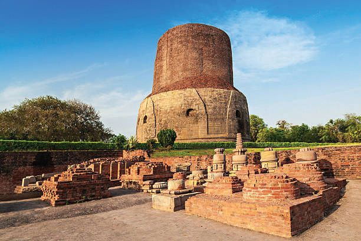<figcaption>Figure fig_ch02_p031_18 (Page 31)</figcaption></figure>
  <div class="page-content">
    <p>Ideas and Early States</p>
    <p>into the ocean and become
one, once a person becomes a
member of the Buddhist
Sangha, that person loses his/
her name, forgets the caste,
rank, and family.”
Later, Buddhism split into
Mahayana and Hinayana.
The followers of Mahayana
worshipped Buddha as God.
Buddhism has made many
contributions to the culture
Sanchi Stupa in Madhya Pradesh
of India. The working of the
‘Sangha’ helped to inculcate the
sense of democracy and values in the society.</p>
    <p>The World Recognises India
Ancient world recognised India through
Buddhism. Buddhism spread to Sri Lanka, China,
Japan, Burma, Myanmar, Tibet, Afghanistan and
Southeast Asia.</p>
    <p>Do you think the activities of Buddhist
monastic organisations
were
democratic? Evaluate.</p>
    <p>Kerala and
Buddhism
Buddhist beliefs were
prevalent in Kerala also.
Manimekhalai, the
heroine of the ancient
Tamil work Manimekhalai,
is said to have embraced
Buddhism. Buddha&#x27;s
statues and some other
remains have been found
from various places in
Kerala. Some Malayalam
words and names of
places indicate Buddhist
LQÁXHQFH:KDWGRHVWKH
word ‘Palli&#x27; suggest in
relation to place names?
Find out.</p>
    <p>Sarnath Stupa in Uttar Pradesh
Standard IX</p>
    <p>31</p>
  </div>
</section><section class="page-section" id="page-32">
  <div class="page-header"><span class="page-number">Page 32</span></div>
  <figure class="diagram-card" id="fig_ch02_p032_01"><figcaption>Figure fig_ch02_p032_01 (Page 32)</figcaption></figure>
  <figure class="diagram-card" id="fig_ch02_p032_02"><figcaption>Figure fig_ch02_p032_02 (Page 32)</figcaption></figure>
  <figure class="diagram-card" id="fig_ch02_p032_03"><figcaption>Figure fig_ch02_p032_03 (Page 32)</figcaption></figure>
  <figure class="diagram-card" id="fig_ch02_p032_04"><figcaption>Figure fig_ch02_p032_04 (Page 32)</figcaption></figure>
  <figure class="diagram-card" id="fig_ch02_p032_05"><figcaption>Figure fig_ch02_p032_05 (Page 32)</figcaption></figure>
  <figure class="diagram-card" id="fig_ch02_p032_06"><figcaption>Figure fig_ch02_p032_06 (Page 32)</figcaption></figure>
  <figure class="diagram-card" id="fig_ch02_p032_07"><figcaption>Figure fig_ch02_p032_07 (Page 32)</figcaption></figure>
  <figure class="diagram-card" id="fig_ch02_p032_08"><figcaption>Figure fig_ch02_p032_08 (Page 32)</figcaption></figure>
  <figure class="diagram-card" id="fig_ch02_p032_09"><figcaption>Figure fig_ch02_p032_09 (Page 32)</figcaption></figure>
  <figure class="diagram-card" id="fig_ch02_p032_10"><figcaption>Figure fig_ch02_p032_10 (Page 32)</figcaption></figure>
  <figure class="diagram-card" id="fig_ch02_p032_11"><figcaption>Figure fig_ch02_p032_11 (Page 32)</figcaption></figure>
  <figure class="diagram-card" id="fig_ch02_p032_12"><figcaption>Figure fig_ch02_p032_12 (Page 32)</figcaption></figure>
  <figure class="diagram-card" id="fig_ch02_p032_13"><figcaption>Figure fig_ch02_p032_13 (Page 32)</figcaption></figure>
  <figure class="diagram-card" id="fig_ch02_p032_14"><figcaption>Figure fig_ch02_p032_14 (Page 32)</figcaption></figure>
  <figure class="diagram-card" id="fig_ch02_p032_15"><figcaption>Figure fig_ch02_p032_15 (Page 32)</figcaption></figure>
  <figure class="diagram-card" id="fig_ch02_p032_16"><figcaption>Figure fig_ch02_p032_16 (Page 32)</figcaption></figure>
  <figure class="diagram-card" id="fig_ch02_p032_17"><figcaption>Figure fig_ch02_p032_17 (Page 32)</figcaption></figure>
  <div class="page-content">
    <p>Chapter 2</p>
    <p>How did Buddha respond to the socio-economic
conditions that prevailed in the 6th century BCE?
Discuss.
Indications


</p>
    <p>Vedic practices
z Varna system
z Status of women
z</p>
    <p>Find out and list the common ideas propounded by the
Buddha and Mahavira.</p>
    <p>Materialism
The main characteristic of Indian culture since ancient times is the emergence and
merger of different schools of thought. Several schools of thought were formed in the 6th
century BCE. Materialism was one of them. Ajita Kesakambalin was the promulgator
of this school of thought. He was a contemporary of the Buddha. The materialists
opined that all religious practices are meaningless and that there is neither Ihaloka or
Paraloka WKLVZRUOGRUWKHRWKHUZRUOG 7KHPDWHULDOLVWVVDLG +XPDQVDUHPDGHXS
of four elements. When they die, their solid matter dissolves in the earth. Liquidity
GLVVROYHVLQZDWHUKHDWLQÀUHEUHDWKLQDLUDQGVHQVHVLQYDFXXP·</p>
    <p>¾ Why are they called materialists?</p>
    <p>Prepare a virtual tour report including the places connected
with the formation of new ideas and religions.</p>
    <p>32</p>
    <p>Social Science I</p>
  </div>
</section><section class="page-section" id="page-33">
  <div class="page-header"><span class="page-number">Page 33</span></div>
  <figure class="diagram-card" id="fig_ch02_p033_01"><figcaption>Figure fig_ch02_p033_01 (Page 33)</figcaption></figure>
  <figure class="diagram-card" id="fig_ch02_p033_02"><figcaption>Figure fig_ch02_p033_02 (Page 33)</figcaption></figure>
  <figure class="diagram-card" id="fig_ch02_p033_03"><figcaption>Figure fig_ch02_p033_03 (Page 33)</figcaption></figure>
  <figure class="diagram-card" id="fig_ch02_p033_04"><figcaption>Figure fig_ch02_p033_04 (Page 33)</figcaption></figure>
  <figure class="diagram-card" id="fig_ch02_p033_05"><figcaption>Figure fig_ch02_p033_05 (Page 33)</figcaption></figure>
  <figure class="diagram-card" id="fig_ch02_p033_06"><figcaption>Figure fig_ch02_p033_06 (Page 33)</figcaption></figure>
  <figure class="diagram-card" id="fig_ch02_p033_07"><figcaption>Figure fig_ch02_p033_07 (Page 33)</figcaption></figure>
  <figure class="diagram-card" id="fig_ch02_p033_08"><figcaption>Figure fig_ch02_p033_08 (Page 33)</figcaption></figure>
  <figure class="diagram-card" id="fig_ch02_p033_09"><figcaption>Figure fig_ch02_p033_09 (Page 33)</figcaption></figure>
  <div class="page-content">
    <p>Ideas and Early States</p>
    <p>Mahajanapadas or the Early States
As long as such decisions are taken together after discussion; as long
as they work together; as long as elders are respected, supported
and listened to carefully; as long as the women of Vajji live freely;
as long as the places of worship in villages and cities exist; as long
as people of different faiths can move about freely; as long as they
are respected, Vajji will exist.</p>
    <p>Above is what the Buddha said about Vajji (Mahajanapada) in
the Digha Nikaya, a Buddhist work composed 2300 years ago.
What can we learn from this about the administrative system of
Vajji at that time?
z</p>
    <p>Decisions were taken jointly through discussions</p>
    <p>z
z
z
z
z</p>
    <p>ST-427-3-SOC. SCI.-I-(E)-9-VOL-1</p>
    <p>Vajji was one of the many states in India in the 6th century
BCE. Let us examine how these states were formed.</p>
    <p>Janapadas
&#x27;Janapada&#x27; means a
place where people
were settled. Forests
were burnt down to
form farmlands and
residential areas.
People settled there
permanently. This is
how Janapadas were
formed. Later Vedas
refer to various
Janapadas.</p>
    <p>Tribal social system existed in the Vedic period. The tribes
of the period were known as ‘Jana’. As agriculture became
widespread, these tribal communities began to settle
down permanently in different places. These came to be known as ‘Janapadas.’</p>
    <p>Agricultural surplus production in the Janapadas led to the growth of trade as
well as the development of towns. Along with trade, towns became manufacturing
centres for different crafts. Some regulations became necessary to coordinate
and regulate such diverse economic activities. In this situation, the tribal form of
governance disappeared.</p>
    <p>Standard IX</p>
    <p>33</p>
  </div>
</section><section class="page-section" id="page-34">
  <div class="page-header"><span class="page-number">Page 34</span></div>
  <figure class="diagram-card" id="fig_ch02_p034_01"><figcaption>Figure fig_ch02_p034_01 (Page 34)</figcaption></figure>
  <figure class="diagram-card" id="fig_ch02_p034_02"><figcaption>Figure fig_ch02_p034_02 (Page 34)</figcaption></figure>
  <figure class="diagram-card" id="fig_ch02_p034_03"><figcaption>Figure fig_ch02_p034_03 (Page 34)</figcaption></figure>
  <figure class="diagram-card" id="fig_ch02_p034_04"><figcaption>Figure fig_ch02_p034_04 (Page 34)</figcaption></figure>
  <figure class="diagram-card" id="fig_ch02_p034_05"><figcaption>Figure fig_ch02_p034_05 (Page 34)</figcaption></figure>
  <figure class="diagram-card" id="fig_ch02_p034_06"><figcaption>Figure fig_ch02_p034_06 (Page 34)</figcaption></figure>
  <figure class="diagram-card" id="fig_ch02_p034_07"><figcaption>Figure fig_ch02_p034_07 (Page 34)</figcaption></figure>
  <figure class="diagram-card" id="fig_ch02_p034_08"><figcaption>Figure fig_ch02_p034_08 (Page 34)</figcaption></figure>
  <figure class="diagram-card" id="fig_ch02_p034_09"><figcaption>Figure fig_ch02_p034_09 (Page 34)</figcaption></figure>
  <figure class="diagram-card" id="fig_ch02_p034_10">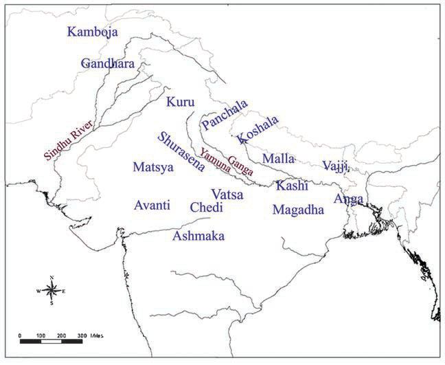<figcaption>Figure fig_ch02_p034_10 (Page 34)</figcaption></figure>
  <div class="page-content">
    <p>Chapter 2</p>
    <p>Cities
After a long journey,
Buddha and his
disciple Ananda
reached the city
of Kushinara. The
Buddha’s nirvana was
also discussed among
many things. Ananda
suggested Buddha that
he should not attain
nirvana at a place like
Kushinara where there
were only mud huts
in a forest; instead,
the Buddha should
select bigger cities like
Champa, Rajagriha,
Shravasti, Saketa,
Kausambi or Varanasi
for his last breath.
What did you learn
from this description
in the Buddhist work
Digha Nikaya?</p>
    <p>34</p>
    <p>The inextricable relationship with agriculture and the
soil started during this time. This gave rise to the view
of one&#x27;s own land. This is how state formation became
a reality. The Buddhist work Anguttaranikaya speaks of
16 political entities that came into being, in this way.
These were known as ‘Mahajanapadas’. The changes
described above are referred to as ‘second urbanisation,’
by historians.
Find out and list 16 Mahajanapadas from the map given
below</p>
    <p>Map 1
16 Mahajanapadas</p>
    <p>z</p>
    <p>z</p>
    <p>z</p>
    <p>z</p>
    <p>z</p>
    <p>z</p>
    <p>z</p>
    <p>z</p>
    <p>z</p>
    <p>z</p>
    <p>z</p>
    <p>z</p>
    <p>z</p>
    <p>z</p>
    <p>z</p>
    <p>z</p>
    <p>Social Science I</p>
  </div>
</section><section class="page-section" id="page-35">
  <div class="page-header"><span class="page-number">Page 35</span></div>
  <figure class="diagram-card" id="fig_ch02_p035_01"><figcaption>Figure fig_ch02_p035_01 (Page 35)</figcaption></figure>
  <figure class="diagram-card" id="fig_ch02_p035_02"><figcaption>Figure fig_ch02_p035_02 (Page 35)</figcaption></figure>
  <figure class="diagram-card" id="fig_ch02_p035_03"><figcaption>Figure fig_ch02_p035_03 (Page 35)</figcaption></figure>
  <figure class="diagram-card" id="fig_ch02_p035_04"><figcaption>Figure fig_ch02_p035_04 (Page 35)</figcaption></figure>
  <figure class="diagram-card" id="fig_ch02_p035_05"><figcaption>Figure fig_ch02_p035_05 (Page 35)</figcaption></figure>
  <figure class="diagram-card" id="fig_ch02_p035_06"><figcaption>Figure fig_ch02_p035_06 (Page 35)</figcaption></figure>
  <div class="page-content">
    <p>Ideas and Early States</p>
    <p>Administrative System in the Mahajanapadas
Contemporary works provide some information
about the administrative systems of the
0DKDMDQDSDGDV$QHIÀFLHQWV\VWHPRIWD[FROOHFWLRQ
and a standing army developed during this time.
The word ‘Bali’ found in Pali texts means tax.
‘Bhaga’ was another type of tax. Grains and cattle
were mainly paid as tax. Those who lived in the
forests paid forest produce as taxes, while artisans
ZRUNHGIRUWKHNLQJRQÀ[HGGD\V
7KHUH ZHUH PDQ\ RIÀFLDOV IRU FDUU\LQJ RXW
administration. The work Satapathabrahmana
mentions Senani, Purohita and Gramani who
assisted the king. Mahajanapadas had forts and
capital cities.</p>
    <p>Wall at Kausambi (Capital of
Vatsa Mahajanapada)</p>
    <p>Identify and discuss the various stages of growth from a tribal
political system to Mahajanapadas and their characteristics.</p>
    <p>The Rise of Magadha
The sixteen Mahajanapadas were constantly engaged in wars for
dominance. Magadha was the ultimate winner. Find the location
of Magadha from Map 1. Identify the present Indian state to
which Magadha belonged.
Magadha was a fertile region with good rainfall. There were
large deposits of iron ore also. Hence, the iron needed for tools
and weapons was readily available. Elephants were an important
factor in wars in those days. Elephants were available in large
numbers in the forests of Magadha. This ensured Magadhan
victory in battles. The Ganga and its tributaries provided easy
transportation of goods. 0DJDGKD DOVR KDG HIÀFLHQW UXOHUV OLNH
Bimbisara and Ajatashatru.</p>
    <p>Dynasties and Prominent Kings of Magadha
</p>
    <p></p>
    <p>z</p>
    <p></p>
    <p></p>
    <p>z</p>
    <p></p>
    <p></p>
    <p>z</p>
    <p>Haryanka Dynasty – Bimbisara, Ajatashatru
Sishunaga Dynasty – Sishunaga
Nanda Dynasty - Mahapadmananda
Standard IX</p>
    <p>35</p>
  </div>
</section><section class="page-section" id="page-36">
  <div class="page-header"><span class="page-number">Page 36</span></div>
  <figure class="diagram-card" id="fig_ch02_p036_01"><figcaption>Figure fig_ch02_p036_01 (Page 36)</figcaption></figure>
  <figure class="diagram-card" id="fig_ch02_p036_02"><figcaption>Figure fig_ch02_p036_02 (Page 36)</figcaption></figure>
  <figure class="diagram-card" id="fig_ch02_p036_03"><figcaption>Figure fig_ch02_p036_03 (Page 36)</figcaption></figure>
  <figure class="diagram-card" id="fig_ch02_p036_04"><figcaption>Figure fig_ch02_p036_04 (Page 36)</figcaption></figure>
  <figure class="diagram-card" id="fig_ch02_p036_05"><figcaption>Figure fig_ch02_p036_05 (Page 36)</figcaption></figure>
  <figure class="diagram-card" id="fig_ch02_p036_06">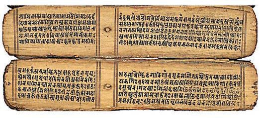<figcaption>Figure fig_ch02_p036_06 (Page 36)</figcaption></figure>
  <figure class="diagram-card" id="fig_ch02_p036_07"><figcaption>Figure fig_ch02_p036_07 (Page 36)</figcaption></figure>
  <figure class="diagram-card" id="fig_ch02_p036_08"><figcaption>Figure fig_ch02_p036_08 (Page 36)</figcaption></figure>
  <figure class="diagram-card" id="fig_ch02_p036_09"><figcaption>Figure fig_ch02_p036_09 (Page 36)</figcaption></figure>
  <div class="page-content">
    <p>Chapter 2</p>
    <p>Do you think that the geographical features were
the main reason for the growth of Magadha? Why?</p>
    <p>From Magadha to the Maurya Kingdom
Magadha was ruled by various dynasties. Chandragupta Maurya
defeated Dhanananda, the last ruler of the Nanda dynasty in 321
BCE and founded the Maurya Kingdom.
This is a big and beautiful city. There is a big wall surrounding this city. It has
64 entrance gates and many towers. The two- and three-storeyed houses are
built of wood and mud blocks. The king’s palace is also made of wood.
Above is the description of the Greek envoy Megasthenes about
the city of Pataliputra (present-day Patna), the capital of the
Maurya kingdom. Arthashastra written by Kautilya, inscriptions
of Emperor Asoka and coins in circulation at that time help in
the study of the history of the Maurya kingdom.</p>
    <p>Arthashastra and Saptanga Theory
Kautilya’s Arthasastra is an
important historical document
that provides information about
the Maurya kingdom. R. Shyama
Sastri, head of the Archaeological
Library Department of Mysore,
got the manuscript of Arthasastra
from a scholar in Thanjavur. In
1907 Shyama Shastri published
WKLV7KHZRUNKDVÀIWHHQFKDSWHUVArthasastra refers that a kingdom rests on seven
components or Saptangas.
z
z
z
z</p>
    <p>36</p>
    <p>Swami – king
Amathya – ministers
Janapada – land and people
Durga²IRUWLÀHGDQGSURWHFWHGDUHD</p>
    <p>Social Science I</p>
    <p>z
z
z</p>
    <p>Kosha – treasury
Danda – justice
Mitra - friendly countries</p>
  </div>
</section><section class="page-section" id="page-37">
  <div class="page-header"><span class="page-number">Page 37</span></div>
  <figure class="diagram-card" id="fig_ch02_p037_01"><figcaption>Figure fig_ch02_p037_01 (Page 37)</figcaption></figure>
  <figure class="diagram-card" id="fig_ch02_p037_02"><figcaption>Figure fig_ch02_p037_02 (Page 37)</figcaption></figure>
  <figure class="diagram-card" id="fig_ch02_p037_03"><figcaption>Figure fig_ch02_p037_03 (Page 37)</figcaption></figure>
  <figure class="diagram-card" id="fig_ch02_p037_04"><figcaption>Figure fig_ch02_p037_04 (Page 37)</figcaption></figure>
  <figure class="diagram-card" id="fig_ch02_p037_05">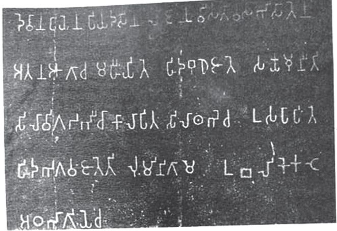<figcaption>Figure fig_ch02_p037_05 (Page 37)</figcaption></figure>
  <figure class="diagram-card" id="fig_ch02_p037_06"><figcaption>Figure fig_ch02_p037_06 (Page 37)</figcaption></figure>
  <figure class="diagram-card" id="fig_ch02_p037_07"><figcaption>Figure fig_ch02_p037_07 (Page 37)</figcaption></figure>
  <figure class="diagram-card" id="fig_ch02_p037_08"><figcaption>Figure fig_ch02_p037_08 (Page 37)</figcaption></figure>
  <figure class="diagram-card" id="fig_ch02_p037_09"><figcaption>Figure fig_ch02_p037_09 (Page 37)</figcaption></figure>
  <div class="page-content">
    <p>Ideas and Early States</p>
    <p>King Asoka was the most important ruler of the Maurya
Kingdom. After he invaded and conquered Kalinga (see Map-2,
present-day Odisha), the Maurya kingdom expanded. It is
recorded in the inscriptions that Asoka gave up war after the
Battle of Kalinga.</p>
    <p>Rumindei (Lumbini) Inscription</p>
    <p>At this place where Buddha Shakyamuni was born, Devanampiya Piyadasi came
and worshipped in person, twenty years after his coronation. A stupa surrounded
by a granite wall was erected here to signify that this was the birthplace of that great
person. It was decided that the people of Lumbini should be exempted from the ‘bali’
and that they need to give only one-eighth part of the harvest as &#x27;bhaga&#x27;.
Inscription in Rumindei, Nepal (Lumbini) and its translation are given above.</p>
    <p>What do you understand about the Maurya kingdom from this
inscription?</p>
    <p>z</p>
    <p>............................................................................................................................................</p>
    <p>z</p>
    <p>...........................................................................................................................................</p>
    <p>z</p>
    <p>............................................................................................................................................</p>
    <p>z</p>
    <p>............................................................................................................................................
Standard IX</p>
    <p>37</p>
  </div>
</section><section class="page-section" id="page-38">
  <div class="page-header"><span class="page-number">Page 38</span></div>
  <figure class="diagram-card" id="fig_ch02_p038_01"><figcaption>Figure fig_ch02_p038_01 (Page 38)</figcaption></figure>
  <figure class="diagram-card" id="fig_ch02_p038_02"><figcaption>Figure fig_ch02_p038_02 (Page 38)</figcaption></figure>
  <figure class="diagram-card" id="fig_ch02_p038_03"><figcaption>Figure fig_ch02_p038_03 (Page 38)</figcaption></figure>
  <figure class="diagram-card" id="fig_ch02_p038_04"><figcaption>Figure fig_ch02_p038_04 (Page 38)</figcaption></figure>
  <figure class="diagram-card" id="fig_ch02_p038_05"><figcaption>Figure fig_ch02_p038_05 (Page 38)</figcaption></figure>
  <figure class="diagram-card" id="fig_ch02_p038_06"><figcaption>Figure fig_ch02_p038_06 (Page 38)</figcaption></figure>
  <figure class="diagram-card" id="fig_ch02_p038_07"><figcaption>Figure fig_ch02_p038_07 (Page 38)</figcaption></figure>
  <figure class="diagram-card" id="fig_ch02_p038_08"><figcaption>Figure fig_ch02_p038_08 (Page 38)</figcaption></figure>
  <figure class="diagram-card" id="fig_ch02_p038_09"><figcaption>Figure fig_ch02_p038_09 (Page 38)</figcaption></figure>
  <figure class="diagram-card" id="fig_ch02_p038_10"><figcaption>Figure fig_ch02_p038_10 (Page 38)</figcaption></figure>
  <figure class="diagram-card" id="fig_ch02_p038_11"><figcaption>Figure fig_ch02_p038_11 (Page 38)</figcaption></figure>
  <figure class="diagram-card" id="fig_ch02_p038_12"><figcaption>Figure fig_ch02_p038_12 (Page 38)</figcaption></figure>
  <figure class="diagram-card" id="fig_ch02_p038_13"><figcaption>Figure fig_ch02_p038_13 (Page 38)</figcaption></figure>
  <figure class="diagram-card" id="fig_ch02_p038_14"><figcaption>Figure fig_ch02_p038_14 (Page 38)</figcaption></figure>
  <figure class="diagram-card" id="fig_ch02_p038_15"><figcaption>Figure fig_ch02_p038_15 (Page 38)</figcaption></figure>
  <figure class="diagram-card" id="fig_ch02_p038_16">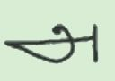<figcaption>Figure fig_ch02_p038_16 (Page 38)</figcaption></figure>
  <figure class="diagram-card" id="fig_ch02_p038_17"><figcaption>Figure fig_ch02_p038_17 (Page 38)</figcaption></figure>
  <figure class="diagram-card" id="fig_ch02_p038_18"><figcaption>Figure fig_ch02_p038_18 (Page 38)</figcaption></figure>
  <figure class="diagram-card" id="fig_ch02_p038_19">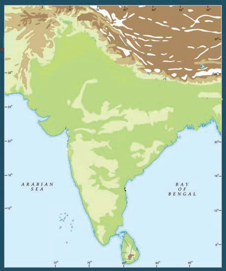<figcaption>Figure fig_ch02_p038_19 (Page 38)</figcaption></figure>
  <div class="page-content">
    <p>Chapter 2</p>
    <p>Mauryan Rule
Asokan Inscriptions
A large number of stone
inscriptions of Asoka
have been discovered
from various parts of the
Indian subcontinent. They
are written in Brahmi,
Kharoshti and Aramaic
scripts. The Asokan
inscriptions were Àrst
read in 1838 by the British
epigraphist James Princep.
Most of the inscriptions
refer to the king as
‘Devanampiya’ (beloved
of God). But the name
‘Asoka’ can be found in
the inscriptions of Maski,
Udegulam and Nittoor in
Karnataka.</p>
    <p>You have seen that the Maurya kingdom was vast.
Now, let us look at their system of administration.
As you know, our country is divided into various
states for administrative convenience and all states
have capitals. The Maurya kingdom was also divided
into various provinces in this way. Such provinces
were under the control of governors. Pataliputra, the
capital, was under the direct control of the Emperor.
Find the capitals of the provinces
from Map 2 and complete the
table.</p>
    <p>Map 2
Takshashila</p>
    <p>Most of the scripts used in
modern India are derived
from the Brahmi script.</p>
    <p>Pataliputra
Ujjayini
Tosali</p>
    <p>Brahmi
Hindi</p>
    <p>Ka</p>
    <p>Suvarnagiri</p>
    <p>Bengali
Malayalam
Tamil</p>
    <p>Provincial Capitals
State Capital</p>
    <p>38</p>
    <p>Social Science I</p>
    <p>lin</p>
    <p>ga</p>
  </div>
</section><section class="page-section" id="page-39">
  <div class="page-header"><span class="page-number">Page 39</span></div>
  <figure class="diagram-card" id="fig_ch02_p039_01"><figcaption>Figure fig_ch02_p039_01 (Page 39)</figcaption></figure>
  <figure class="diagram-card" id="fig_ch02_p039_02"><figcaption>Figure fig_ch02_p039_02 (Page 39)</figcaption></figure>
  <figure class="diagram-card" id="fig_ch02_p039_03"><figcaption>Figure fig_ch02_p039_03 (Page 39)</figcaption></figure>
  <figure class="diagram-card" id="fig_ch02_p039_04"><figcaption>Figure fig_ch02_p039_04 (Page 39)</figcaption></figure>
  <figure class="diagram-card" id="fig_ch02_p039_05"><figcaption>Figure fig_ch02_p039_05 (Page 39)</figcaption></figure>
  <figure class="diagram-card" id="fig_ch02_p039_06"><figcaption>Figure fig_ch02_p039_06 (Page 39)</figcaption></figure>
  <figure class="diagram-card" id="fig_ch02_p039_07"><figcaption>Figure fig_ch02_p039_07 (Page 39)</figcaption></figure>
  <figure class="diagram-card" id="fig_ch02_p039_08"><figcaption>Figure fig_ch02_p039_08 (Page 39)</figcaption></figure>
  <figure class="diagram-card" id="fig_ch02_p039_09"><figcaption>Figure fig_ch02_p039_09 (Page 39)</figcaption></figure>
  <figure class="diagram-card" id="fig_ch02_p039_10"><figcaption>Figure fig_ch02_p039_10 (Page 39)</figcaption></figure>
  <figure class="diagram-card" id="fig_ch02_p039_11"><figcaption>Figure fig_ch02_p039_11 (Page 39)</figcaption></figure>
  <figure class="diagram-card" id="fig_ch02_p039_12"><figcaption>Figure fig_ch02_p039_12 (Page 39)</figcaption></figure>
  <figure class="diagram-card" id="fig_ch02_p039_13"><figcaption>Figure fig_ch02_p039_13 (Page 39)</figcaption></figure>
  <figure class="diagram-card" id="fig_ch02_p039_14"><figcaption>Figure fig_ch02_p039_14 (Page 39)</figcaption></figure>
  <figure class="diagram-card" id="fig_ch02_p039_15"><figcaption>Figure fig_ch02_p039_15 (Page 39)</figcaption></figure>
  <div class="page-content">
    <p>Ideas and Early States</p>
    <p>Southern province
Western province
Northern province
Eastern province
7KH 0DXU\DQ DUP\ KDG ÀYH GLYLVLRQV 7KH\ ZHUH LQIDQWU\
cavalry, chariots, elephants and the navy. Military administration
was carried out by a 30 member committee.
The ideas propagated by Emperor Asoka to maintain peace and
coexistence among his subjects are known as ‘Asoka Dhamma’
(Dharma). We learn about this from Asoka’s edicts.
The following are the main ideas of &#x27;Asoka Dhamma&#x27;.
Be tolerant to other religions</p>
    <p>&#x27;Asoka
Dhamma&#x27;
(Dharma)</p>
    <p>Respect elders and teachers
Be kind to slaves and the sick</p>
    <p>Eminent historian Romila Thapar opines that &#x27;Asoka
&#x27;KDPPD ZDVDSROLF\IRUWKHHIÀFLHQWDGPLQLVWUDWLRQ
of a vast country and for keeping various social
groups in harmony.</p>
    <p>What features of the present Indian
administrative system can be seen in
the Mauryan administrative system?
Discuss and compare.</p>
    <p>Romila Thapar</p>
    <p>Standard IX</p>
    <p>39</p>
  </div>
</section><section class="page-section" id="page-40">
  <div class="page-header"><span class="page-number">Page 40</span></div>
  <figure class="diagram-card" id="fig_ch02_p040_01"><figcaption>Figure fig_ch02_p040_01 (Page 40)</figcaption></figure>
  <figure class="diagram-card" id="fig_ch02_p040_02"><figcaption>Figure fig_ch02_p040_02 (Page 40)</figcaption></figure>
  <figure class="diagram-card" id="fig_ch02_p040_03"><figcaption>Figure fig_ch02_p040_03 (Page 40)</figcaption></figure>
  <figure class="diagram-card" id="fig_ch02_p040_04"><figcaption>Figure fig_ch02_p040_04 (Page 40)</figcaption></figure>
  <figure class="diagram-card" id="fig_ch02_p040_05"><figcaption>Figure fig_ch02_p040_05 (Page 40)</figcaption></figure>
  <figure class="diagram-card" id="fig_ch02_p040_06"><figcaption>Figure fig_ch02_p040_06 (Page 40)</figcaption></figure>
  <figure class="diagram-card" id="fig_ch02_p040_07"><figcaption>Figure fig_ch02_p040_07 (Page 40)</figcaption></figure>
  <figure class="diagram-card" id="fig_ch02_p040_08"><figcaption>Figure fig_ch02_p040_08 (Page 40)</figcaption></figure>
  <figure class="diagram-card" id="fig_ch02_p040_09"><figcaption>Figure fig_ch02_p040_09 (Page 40)</figcaption></figure>
  <figure class="diagram-card" id="fig_ch02_p040_10"><figcaption>Figure fig_ch02_p040_10 (Page 40)</figcaption></figure>
  <figure class="diagram-card" id="fig_ch02_p040_11"><figcaption>Figure fig_ch02_p040_11 (Page 40)</figcaption></figure>
  <figure class="diagram-card" id="fig_ch02_p040_12"><figcaption>Figure fig_ch02_p040_12 (Page 40)</figcaption></figure>
  <figure class="diagram-card" id="fig_ch02_p040_13"><figcaption>Figure fig_ch02_p040_13 (Page 40)</figcaption></figure>
  <figure class="diagram-card" id="fig_ch02_p040_14"><figcaption>Figure fig_ch02_p040_14 (Page 40)</figcaption></figure>
  <figure class="diagram-card" id="fig_ch02_p040_15"><figcaption>Figure fig_ch02_p040_15 (Page 40)</figcaption></figure>
  <figure class="diagram-card" id="fig_ch02_p040_16"><figcaption>Figure fig_ch02_p040_16 (Page 40)</figcaption></figure>
  <figure class="diagram-card" id="fig_ch02_p040_17">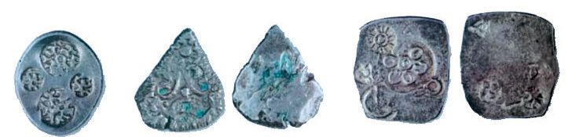<figcaption>Figure fig_ch02_p040_17 (Page 40)</figcaption></figure>
  <figure class="diagram-card" id="fig_ch02_p040_18">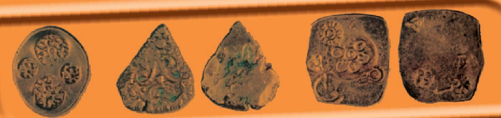<figcaption>Figure fig_ch02_p040_18 (Page 40)</figcaption></figure>
  <figure class="diagram-card" id="fig_ch02_p040_19">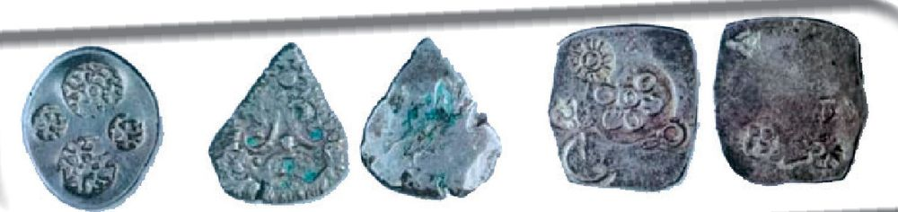<figcaption>Figure fig_ch02_p040_19 (Page 40)</figcaption></figure>
  <figure class="diagram-card" id="fig_ch02_p040_20"><figcaption>Figure fig_ch02_p040_20 (Page 40)</figcaption></figure>
  <div class="page-content">
    <p>Chapter 2</p>
    <p>Growth of Trade
The above image shows the early coins that were in circulation
in ancient India. These are known as Punch Marked Coins. They
are made of silver and copper. These are evidences to show that
coins were used for trade.
Takshashila</p>
    <p>Map 3</p>
    <p>Pataliputra
Ujjayini</p>
    <p>Goods
were
transported
through land, sea and rivers.
Grains, textiles, metal, etc.
were the chief commodities of
trade. The words ‘Setthis’ and
‘Satthavahakar’ mentioned in
the books of those days refer to
traders.</p>
    <p>Thamralipti</p>
    <p>Broach</p>
    <p>Suvarnagiri</p>
    <p>Observe the map
DQG ÀQG RXW WKH
regions through
which trade was conducted.</p>
    <p>So far, we have been discussing
the origin and formation of the
Mahajanapadas in the Indian
sub-continent and how they later evolved into the Maurya
Kingdom. Another region that witnessed similar political changes
in this period was Greece in Southeastern Europe.</p>
    <p>40</p>
    <p>Social Science I</p>
  </div>
</section><section class="page-section" id="page-41">
  <div class="page-header"><span class="page-number">Page 41</span></div>
  <figure class="diagram-card" id="fig_ch02_p041_01"><figcaption>Figure fig_ch02_p041_01 (Page 41)</figcaption></figure>
  <figure class="diagram-card" id="fig_ch02_p041_02"><figcaption>Figure fig_ch02_p041_02 (Page 41)</figcaption></figure>
  <figure class="diagram-card" id="fig_ch02_p041_03"><figcaption>Figure fig_ch02_p041_03 (Page 41)</figcaption></figure>
  <figure class="diagram-card" id="fig_ch02_p041_04"><figcaption>Figure fig_ch02_p041_04 (Page 41)</figcaption></figure>
  <figure class="diagram-card" id="fig_ch02_p041_05"><figcaption>Figure fig_ch02_p041_05 (Page 41)</figcaption></figure>
  <figure class="diagram-card" id="fig_ch02_p041_06"><figcaption>Figure fig_ch02_p041_06 (Page 41)</figcaption></figure>
  <div class="page-content">
    <p>Ideas and Early States</p>
    <p>State Formation in Greece
Find the location of Greece from the map given below:</p>
    <p>Map 4</p>
    <p>Corinth</p>
    <p>Greece</p>
    <p>Thebes
Athens</p>
    <p>Sparta</p>
    <p>In Greece, villages stood together for the purpose of security and
governance. They came to be known as city-states. A city-state
consisted of a city and the surrounding agricultural villages.
Hills and mountains provided natural boundaries for these citystates. Some of the city states were islands. The capitals of these
city-states were located on high hills. Athens, Sparta, Corinth,
and Thebes were some of the major city-states of Greece.</p>
    <p>Athens on the Democratic Way
The system of government that prevailed in Athens 2500 years
ago resembled modern democracy. This was different from the
system of governance in other city-states. All males, over the age
of 30, except slaves were considered as citizens. These citizens
formed a committee and met four times a year to take decisions</p>
    <p>Standard IX</p>
    <p>41</p>
  </div>
</section><section class="page-section" id="page-42">
  <div class="page-header"><span class="page-number">Page 42</span></div>
  <figure class="diagram-card" id="fig_ch02_p042_01"><figcaption>Figure fig_ch02_p042_01 (Page 42)</figcaption></figure>
  <figure class="diagram-card" id="fig_ch02_p042_02"><figcaption>Figure fig_ch02_p042_02 (Page 42)</figcaption></figure>
  <figure class="diagram-card" id="fig_ch02_p042_03"><figcaption>Figure fig_ch02_p042_03 (Page 42)</figcaption></figure>
  <figure class="diagram-card" id="fig_ch02_p042_04"><figcaption>Figure fig_ch02_p042_04 (Page 42)</figcaption></figure>
  <figure class="diagram-card" id="fig_ch02_p042_05"><figcaption>Figure fig_ch02_p042_05 (Page 42)</figcaption></figure>
  <figure class="diagram-card" id="fig_ch02_p042_06"><figcaption>Figure fig_ch02_p042_06 (Page 42)</figcaption></figure>
  <figure class="diagram-card" id="fig_ch02_p042_07"><figcaption>Figure fig_ch02_p042_07 (Page 42)</figcaption></figure>
  <figure class="diagram-card" id="fig_ch02_p042_08"><figcaption>Figure fig_ch02_p042_08 (Page 42)</figcaption></figure>
  <figure class="diagram-card" id="fig_ch02_p042_09"><figcaption>Figure fig_ch02_p042_09 (Page 42)</figcaption></figure>
  <figure class="diagram-card" id="fig_ch02_p042_10"><figcaption>Figure fig_ch02_p042_10 (Page 42)</figcaption></figure>
  <figure class="diagram-card" id="fig_ch02_p042_11"><figcaption>Figure fig_ch02_p042_11 (Page 42)</figcaption></figure>
  <figure class="diagram-card" id="fig_ch02_p042_12"><figcaption>Figure fig_ch02_p042_12 (Page 42)</figcaption></figure>
  <figure class="diagram-card" id="fig_ch02_p042_13"><figcaption>Figure fig_ch02_p042_13 (Page 42)</figcaption></figure>
  <figure class="diagram-card" id="fig_ch02_p042_14"><figcaption>Figure fig_ch02_p042_14 (Page 42)</figcaption></figure>
  <figure class="diagram-card" id="fig_ch02_p042_15"><figcaption>Figure fig_ch02_p042_15 (Page 42)</figcaption></figure>
  <figure class="diagram-card" id="fig_ch02_p042_16"><figcaption>Figure fig_ch02_p042_16 (Page 42)</figcaption></figure>
  <div class="page-content">
    <p>Chapter 2</p>
    <p>on important matters. Women, artisans and the foreigners who
worked as traders were not considered as citizens.</p>
    <p>As an important centre of trade in the Mediterranean region, Athens was
a prosperous city-state. Many in Athens were skilled in ship building and
seafaring. They constantly travelled to nearby areas and gathered new ideas
and skills. Many thinkers from other regions were attracted to Athens. They
were known as Sophists. Herodotus, who is considered as the father of
history, is one of those thinkers who reached Athens in this way.</p>
    <p>How did the Athenian system of government
differ from modern democracy?</p>
    <p>Compare the Mahajanapadas of India and the
city-states of Greece.</p>
    <p>6L[WKFHQWXU\%&amp;(ZDVDSHULRGWKDWZLWQHVVHGVLJQLÀFDQWFKDQJHV
in history. Changes occurred in various spheres of the life of
the people during that time. The changes in material life were
UHÁHFWHGLQWKHVSKHUHVRISROLWLFVDQGSKLORVRSK\DOVR7KXV
new ideas emerged during the period. These have had a decisive
LQÁXHQFHRQVXEVHTXHQWKXPDQKLVWRU\</p>
    <p>42</p>
    <p>Social Science I</p>
  </div>
</section><section class="page-section" id="page-43">
  <div class="page-header"><span class="page-number">Page 43</span></div>
  <figure class="diagram-card" id="fig_ch02_p043_01"><figcaption>Figure fig_ch02_p043_01 (Page 43)</figcaption></figure>
  <figure class="diagram-card" id="fig_ch02_p043_02"><figcaption>Figure fig_ch02_p043_02 (Page 43)</figcaption></figure>
  <figure class="diagram-card" id="fig_ch02_p043_03"><figcaption>Figure fig_ch02_p043_03 (Page 43)</figcaption></figure>
  <figure class="diagram-card" id="fig_ch02_p043_04"><figcaption>Figure fig_ch02_p043_04 (Page 43)</figcaption></figure>
  <figure class="diagram-card" id="fig_ch02_p043_05"><figcaption>Figure fig_ch02_p043_05 (Page 43)</figcaption></figure>
  <figure class="diagram-card" id="fig_ch02_p043_06"><figcaption>Figure fig_ch02_p043_06 (Page 43)</figcaption></figure>
  <figure class="diagram-card" id="fig_ch02_p043_07"><figcaption>Figure fig_ch02_p043_07 (Page 43)</figcaption></figure>
  <figure class="diagram-card" id="fig_ch02_p043_08"><figcaption>Figure fig_ch02_p043_08 (Page 43)</figcaption></figure>
  <figure class="diagram-card" id="fig_ch02_p043_09"><figcaption>Figure fig_ch02_p043_09 (Page 43)</figcaption></figure>
  <figure class="diagram-card" id="fig_ch02_p043_10"><figcaption>Figure fig_ch02_p043_10 (Page 43)</figcaption></figure>
  <figure class="diagram-card" id="fig_ch02_p043_11"><figcaption>Figure fig_ch02_p043_11 (Page 43)</figcaption></figure>
  <figure class="diagram-card" id="fig_ch02_p043_12"><figcaption>Figure fig_ch02_p043_12 (Page 43)</figcaption></figure>
  <figure class="diagram-card" id="fig_ch02_p043_13"><figcaption>Figure fig_ch02_p043_13 (Page 43)</figcaption></figure>
  <div class="page-content">
    <p>Ideas and Early States</p>
    <p>6th Century BCE</p>
    <p>Material changes</p>
    <p>Changes in Ideology</p>
    <p>Buddhism</p>
    <p>Use of iron tools</p>
    <p>Agricultural
progress
Surplus
production</p>
    <p>Jainism</p>
    <p>Materialism</p>
    <p>State formation</p>
    <p>Janapadas</p>
    <p>The city states of
Greece</p>
    <p>Mahajanapadas
Alexander&#x27;s
Empire</p>
    <p>Trade</p>
    <p>Magadha</p>
    <p>Cities</p>
    <p>Maurya Kingdom</p>
    <p>Standard IX</p>
    <p>43</p>
  </div>
</section><section class="page-section" id="page-44">
  <div class="page-header"><span class="page-number">Page 44</span></div>
  <figure class="diagram-card" id="fig_ch02_p044_01"><figcaption>Figure fig_ch02_p044_01 (Page 44)</figcaption></figure>
  <figure class="diagram-card" id="fig_ch02_p044_02"><figcaption>Figure fig_ch02_p044_02 (Page 44)</figcaption></figure>
  <figure class="diagram-card" id="fig_ch02_p044_03"><figcaption>Figure fig_ch02_p044_03 (Page 44)</figcaption></figure>
  <figure class="diagram-card" id="fig_ch02_p044_04"><figcaption>Figure fig_ch02_p044_04 (Page 44)</figcaption></figure>
  <figure class="diagram-card" id="fig_ch02_p044_05"><figcaption>Figure fig_ch02_p044_05 (Page 44)</figcaption></figure>
  <figure class="diagram-card" id="fig_ch02_p044_06"><figcaption>Figure fig_ch02_p044_06 (Page 44)</figcaption></figure>
  <div class="page-content">
    <p>Chapter 2</p>
    <p>Extended Activities</p>
    <p>44</p>
    <p>z</p>
    <p>Prepare a short biographical text based on the lives of thinkers who popularised
new ideas in the 6th century BCE. Make them attractive, by adding pictures.</p>
    <p>z</p>
    <p>Prepare a digital presentation including maps on the topic ‘From Janapadas
to the Maurya Kingdom.&#x27;</p>
    <p>z</p>
    <p>
Organise a debate on &#x27;Ideas and Early State Formation&#x27;.</p>
    <p>Social Science I</p>
  </div>
</section><section class="page-section" id="page-45">
  <div class="page-header"><span class="page-number">Page 45</span></div>
  <figure class="diagram-card" id="fig_ch02_p045_01"><figcaption>Figure fig_ch02_p045_01 (Page 45)</figcaption></figure>
  <figure class="diagram-card" id="fig_ch02_p045_02"><figcaption>Figure fig_ch02_p045_02 (Page 45)</figcaption></figure>
  <figure class="diagram-card" id="fig_ch02_p045_03"><figcaption>Figure fig_ch02_p045_03 (Page 45)</figcaption></figure>
  <figure class="diagram-card" id="fig_ch02_p045_04"><figcaption>Figure fig_ch02_p045_04 (Page 45)</figcaption></figure>
  <figure class="diagram-card" id="fig_ch02_p045_05"><figcaption>Figure fig_ch02_p045_05 (Page 45)</figcaption></figure>
  <figure class="diagram-card" id="fig_ch02_p045_06"><figcaption>Figure fig_ch02_p045_06 (Page 45)</figcaption></figure>
  <figure class="diagram-card" id="fig_ch02_p045_07"><figcaption>Figure fig_ch02_p045_07 (Page 45)</figcaption></figure>
  <figure class="diagram-card" id="fig_ch02_p045_08"><figcaption>Figure fig_ch02_p045_08 (Page 45)</figcaption></figure>
  <div class="page-content">
    <p>3</p>
    <p>LAND GRANTS AND
THE INDIAN SOCIETY</p>
    <p>By the order of Sree Vindhyasakti II, the Vakataka Maharaja…
We grant half of this village to the Brahmins in order to attain victory,
longevity and welfare and peace in this world as well as in afterlife. The
exemptions approved by the Chatur Vedas and the previous Maharajas
will be applicable to this grant as well. They are: The administration
here will not be like that in the other areas. Salt or alcohol should not be
produced. There is no need to pay money or cereals to the treasury. No
QHHG WR SUHVHQW ÁRZHUV RU PLON WR WKH NLQJ 3URYLGLQJ FRZ RU EXOORFN
WR WKH RIÀFLDOV LV QRW QHHGHG 7KHUH LV QR QHHG WR JLYH DQ\ VHUYLFH WR
the state. There shall be no liability to provide charcoal or caparison.
The police shall not enter here. No need to provide cot or hearth to the
WRXULQJRIÀFLDOV1RQHHGWRSD\WD[WRWKHNLQJ1RQHHGWRSD\WD[IRU
goods transportation… will be entitled to the treasures hidden beneath
the land. Will have the right to fence and raise the land and to use big
tools. Anyone who obstructs this or causes obstruction shall be punished
as and when complained.</p>
    <p>ST-427-4-SOC. SCI.-I-(E)-9-VOL-1</p>
    <p>Cdr Alok Mohan, Ancient Indian Inscriptions, Vol 3, 1967, pp. 122-124</p>
    <p>This is an order issued by the Vakataka King Vindhyashakti II (355-400 CE). The
order refers to the transfer of some of the land in the king’s possession to the
Brahmins along with special rights. This is known as ‘Land Grants’.
zWhat is the purpose of land grants by the king?
zWhen did the practice of land grants start? Why?
zWere such grants common?</p>
    <p>Mention of land grants can be found in Buddhist works. But, it was only during the
post- Mauryan period that it became widespread and also produced far-reaching
consequences.</p>
  </div>
</section><section class="page-section" id="page-46">
  <div class="page-header"><span class="page-number">Page 46</span></div>
  <figure class="diagram-card" id="fig_ch02_p046_01"><figcaption>Figure fig_ch02_p046_01 (Page 46)</figcaption></figure>
  <figure class="diagram-card" id="fig_ch02_p046_02"><figcaption>Figure fig_ch02_p046_02 (Page 46)</figcaption></figure>
  <figure class="diagram-card" id="fig_ch02_p046_03"><figcaption>Figure fig_ch02_p046_03 (Page 46)</figcaption></figure>
  <figure class="diagram-card" id="fig_ch02_p046_04"><figcaption>Figure fig_ch02_p046_04 (Page 46)</figcaption></figure>
  <figure class="diagram-card" id="fig_ch02_p046_05"><figcaption>Figure fig_ch02_p046_05 (Page 46)</figcaption></figure>
  <figure class="diagram-card" id="fig_ch02_p046_06"><figcaption>Figure fig_ch02_p046_06 (Page 46)</figcaption></figure>
  <figure class="diagram-card" id="fig_ch02_p046_07"><figcaption>Figure fig_ch02_p046_07 (Page 46)</figcaption></figure>
  <figure class="diagram-card" id="fig_ch02_p046_08"><figcaption>Figure fig_ch02_p046_08 (Page 46)</figcaption></figure>
  <div class="page-content">
    <p>Chapter 3</p>
    <p>After the fall of the Mauryas, several dynasties came to power
in different parts of India. Locate them in the map given below.</p>
    <p>Map 1
Kushanas</p>
    <p>Guptas</p>
    <p>Shakas</p>
    <p>Vakatakas
Satavahanas</p>
    <p>Cholas
Cheras
Pandyas</p>
    <p>46</p>
    <p>z................................................................................................................................</p>
    <p>z................................................................................................................................</p>
    <p>z................................................................................................................................</p>
    <p>z................................................................................................................................</p>
    <p>z................................................................................................................................</p>
    <p>z................................................................................................................................</p>
    <p>z................................................................................................................................</p>
    <p>z................................................................................................................................</p>
    <p>Social Science I</p>
  </div>
</section>
    </main>
    <footer>
      <div class="nav-bar"><a href="part_1_chapter_01.html">← Chapter 1 (Pages 7-26)</a><a href="index.html">☰ Index</a><a href="part_1_chapter_03.html">Chapter 3 (Pages 47-66) →</a></div>
      <p style="text-align: center; font-size: 0.85rem; color: var(--text-muted); margin-top: 2rem;">
        Kerala SCERT Class 9 Basic_science (English Medium) - Extracted Study Text
      </p>
    </footer>
  </div>
</body>
</html>
